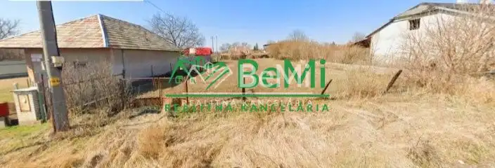
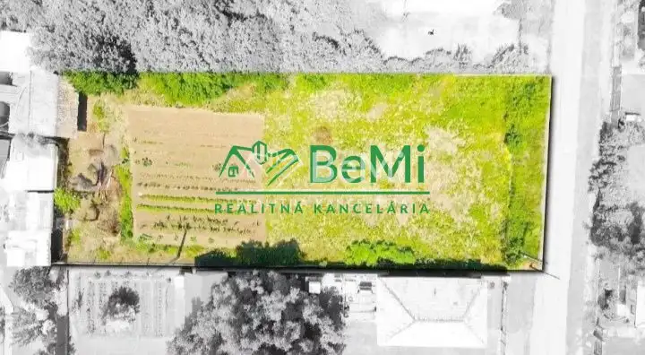
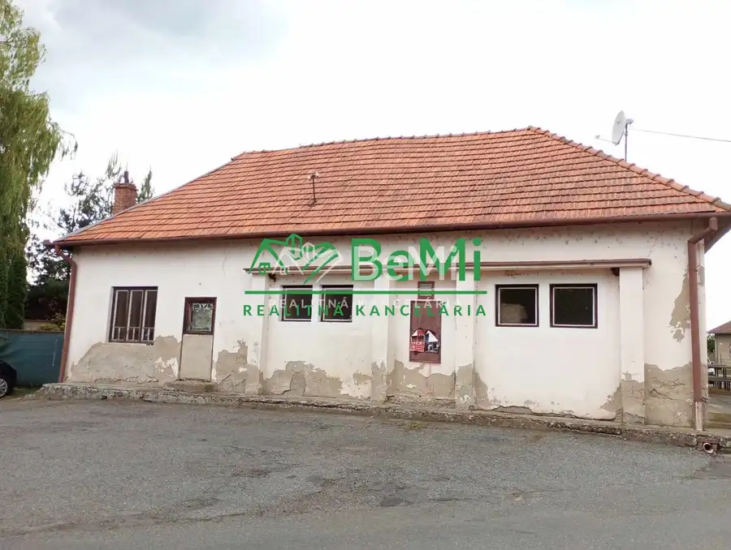
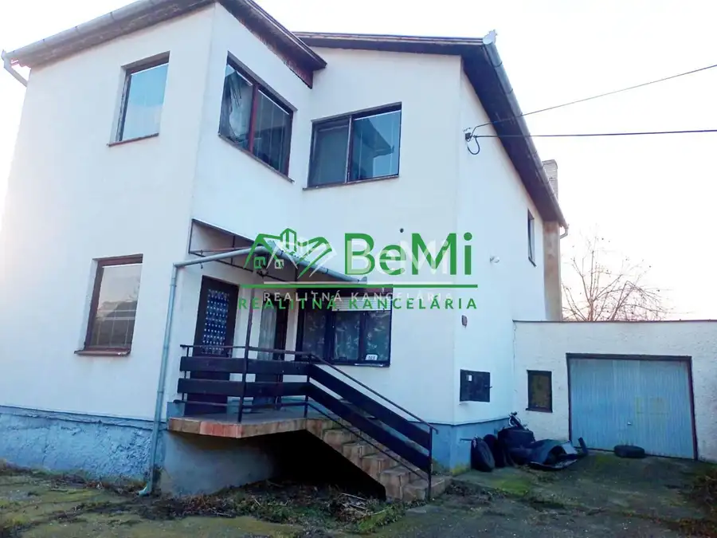
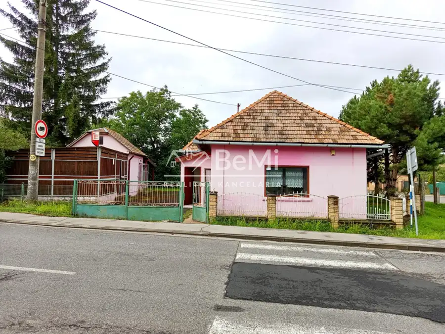

Predaj stavebného pozemku - Pohronský Ruskov ( 025-14-HEKAa)
Pohronský Ruskov


- Plocha1066 m²
- VlastníctvoOsobné
O nehnuteľnosti
Ponúkame Vám na predaj stavebny pozemok v obci Pohronský Ruskov, okres Levice.Plocha: pozemku je 1066m2, orientačná šírka pozemku je 22m a dlžka 46m.IS na pozemku: plynovod, vodovod, elektrina, kanalizácia.Pozemok je oplotený zo všetkých strán, bez vzrastlej zelene a je možné ho využiť podľa vlastných predstávLokalita vhodná na relax a oddych.Občianska vybavenosť obce:- základná škola,- materská škola,- futbalové ihrisko,- COOP Jednota,- obecný úrad,- pošta,- lekáreň,- kostol- DSS.Lokalita:- vzdialenosť len 10 km od mesta Želiezovce,- autobusové a vlakové spojenie,- 26 km od historického mesta Ostrihom,- obec s počtom obyvateľov cca 1300- v širšom okolí termálne kúpaliská ako sú Margita Ilona, Podhájska, Santovka Wellness, Dudinka - Dudince, Vadaš Thermal Štúrovo.cena: 31.000 eV prípade záujmu kontaktujte: Henrieta Kasalová, tel.: 0908 205 240, mail: kasalova@realitybemi.skProstredníctvom nášho finančného poradcu Vám pomôžeme s financovaním kúpy nehnuteľností.NAŠE CENY SÚ VRÁTANE PROVÍZIE ZA KOMPLETNÝ SERVIS A SÚ SCHVÁLENÉ MAJITEĽOM
Parametre
- Druh
- Pozemok pre rodinné domy
- Dátum zverejnenia
- 03. 09. 2025
- Plocha pozemku
- 1066 m²
- Typ
- Predaj
- Vlastníctvo
- Osobné
Kde to je


Mohlo by Vás zaujímať

Komerčné priestoryNové 140 000 €Predaj pohostinstva - Veľké Kozmálovce ( 009-18-HEKAa ) Veľké Kozmálovce 692 m²
DomNové 80 000 €Predaj viacgeneračného rodinného domu - Dolné Semerovce (044-12-HEKA) Dolné Semerovce
Komerčné priestoryNové 50 000 €Predaj obchodný priestor/ rod. dom - Demandice (045-18-HEKA) Demandice